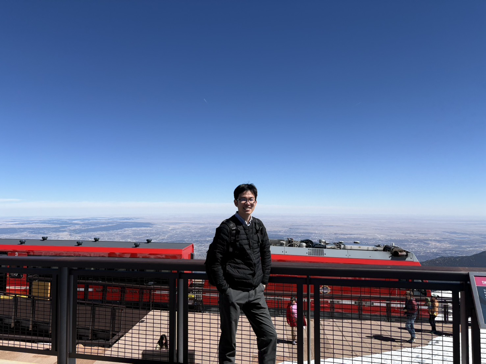

About

京都大学大学院理学研究科 物理学・宇宙物理学専攻 博士後期課程。
統計物理学、非平衡物理学、摩擦現象、粉体系などに興味があります。
Research Interests
- Statistical physics
- Non-equilibrium physics
- Friction
- Granular matter
- Soft matter
Links
Contact
Email: suzuki.ryudo.55e [at] st.kyoto-u.ac.jp
鈴木 隆人

京都大学大学院理学研究科 物理学・宇宙物理学専攻 博士後期課程。
統計物理学、非平衡物理学、摩擦現象、粉体系などに興味があります。
Email: suzuki.ryudo.55e [at] st.kyoto-u.ac.jp